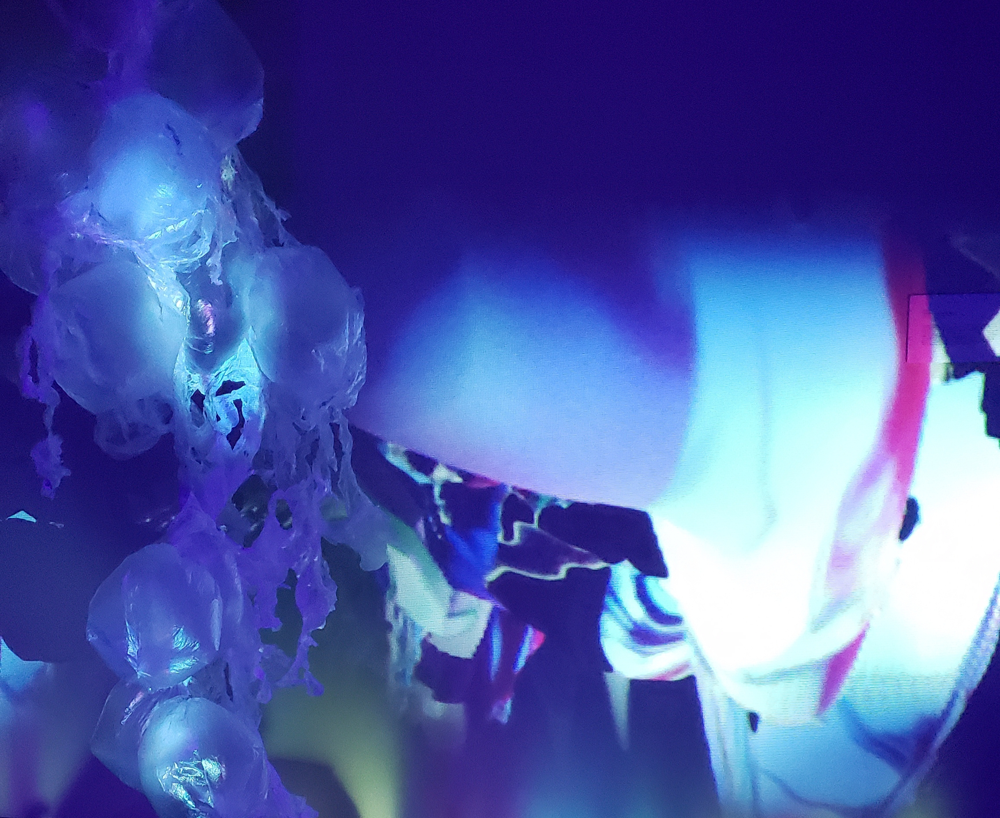

Migration of Entangled Ghosts
Wen Wen

The focus of Migration of Entangled Ghosts lies in the intersection of survival between marine organisms and plastics, merging together inanimate pollutants and lives. This work explores the future that may arise through the combining of sculpture and technology, creating a visual experience of two extremely contradictory substances in environmental ocean problems that are a serious concern yet commonly ignored.
Confronting viewers with the various properties of plastic, Wen creates the image of a floating ghost migration that is restricted to corrosion like a light-weighted toxic presence waving in transparency. Her work is both an imagination and a reality which directs viewers to the sadness caused by the plastic that she found, evoking her audience to realize their participation in this entanglement.
